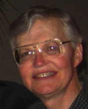

Please note: the AAS Obituaries are temporarily being hosted on this website while their full content is being ingested into the PubPub publishing platform newly adopted by the Bulletin of the American Astronomical Society. When the migration is complete, your existing links will take you to the final, migrated content. Contact peter.williams@aas.org with any questions.
Richard E. Young (1943-2013)
Reprinted with permission from NASA Ames.
Richard E. Young, planetary scientist from NASA’s Ames Research Center, passed away unexpectedly on January 16, 2013 while walking near his country home in the Sierra foothills at Dunlap, California. He was 69.
Rich had a long and productive career in planetary science. After graduating from UC Berkeley, he came to Ames to work on advanced planetary mission concepts, which inspired him to seek and earn a Ph.D. from UCLA, working with Prof. Gerald (Jerry) Schubert, in 1972. After a short post-doc at the National Center for Atmospheric Research (NCAR), Rich returned to Ames to work on the Venus atmosphere with Jim Pollack, and joined the Theoretical Studies Branch of the Space Science Division in 1976. During his career Rich conducted research into a broad variety of topics ranging from interior structural and thermal models of the Moon, Mercury, Mars, Uranus, and Neptune, to 3D atmospheric dynamics of free and forced planetary-scale waves and zonally averaged flows, and the radiative properties of terrestrial volcanic hazes. He was among the first to develop general circulation models for Venus to try to explain its four-day superrotation – perhaps the most challenging goal for understanding deep planetary atmospheres. He participated in three major planetary missions including Pioneer Venus, the Venus Vega mission, and the Galileo Jupiter mission for which he served as the entry probe chief scientist.
Later in his career Rich managed the Planetary Systems Branch for five years. He retired in 2006, but remained active in science by educating the public about the reality and challenge of climate change on Earth. As a human being, Rich was the best. His hearty laugh often echoed around the halls at Ames, and he never had a bad word for anyone.
He was an enthusiastic tennis player, poker player and backpacker. He had a soft spot in his heart for animals of all kinds, and in his retirement he volunteered at an animal rescue shelter near his home.
He is survived by his wife Cindy, her daughters and grandchildren.
BAAS Citation: BAAS, 2013, 45, 017